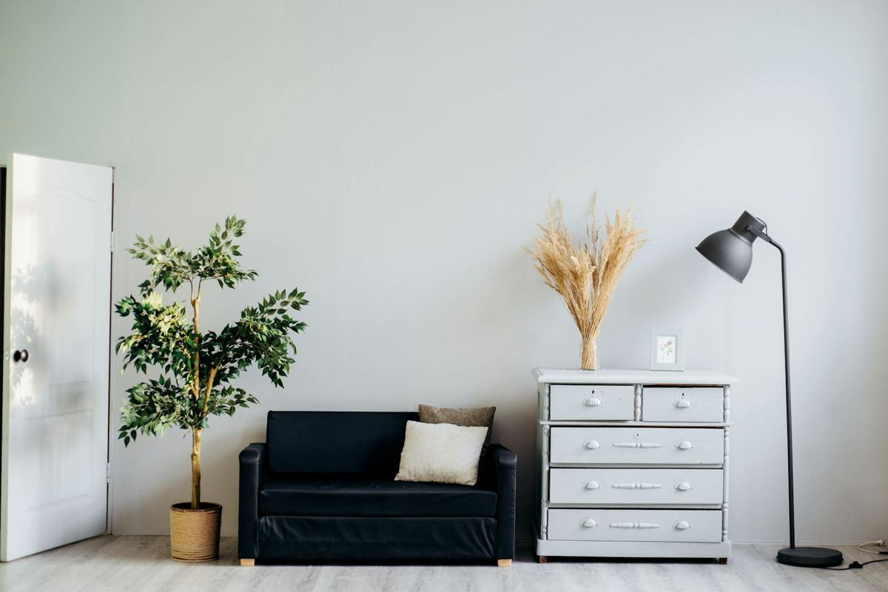

Für Ihr Zuhause
Malerarbeiten
Hochwertige Arbeit innen und außen – sauber, termintreu und mit ehrlicher Beratung zu Farbe und Material.
- Innenanstrich
- Fassade
- Tapezieren
- Lackierarbeiten
- Farbberatung
- Dekorative Techniken
- Schimmelsanierung
- Renovierung